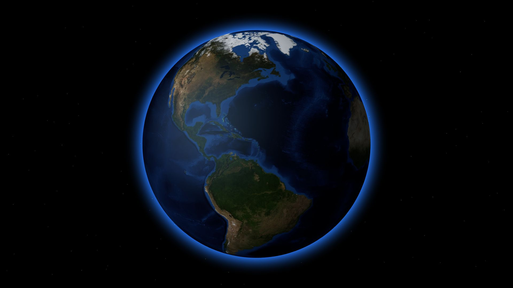

Undergraduate thesis · TISS Mumbai · 1990–2023
Development.At whatplanetary cost?
Planetary Boundary Transgressions and Divergent Socio-Economic Pathways: a world-level study of environmental pressure and human development across 182 countries.
01 / The question
Do better lives cost the planet more?
Development at what cost?
Do countries with better living conditions also place more pressure on the planet?
Make countries comparable
The Planetary Pressure Index combines six environmental-pressure indicators on one 0–100 scale shared by all three periods.
Look for shared pathways
Countries are grouped into exploratory profiles by pressure, income, health and urbanisation, and followed over time. Patterns, not proof of cause.
02 / The headline
Better living conditions. Persistent measured pressure.
More developed profiles have longer lives, higher incomes and more urbanisation, alongside higher planetary pressure. The link weakens over time, but average pressure does not fall.
03 / What the study finds
Three numbers that tell the story
These are associations, not causal effects. Version 2.0 corrects the original thesis analysis: a sovereign-state sample matched by ISO3 code, aligned period labels, one pooled 0–100 PPI scale, one pooled clustering model with logged GDP, and a log-GDP regression matching its label.
Each circle is a country, sized by population and coloured by its development–pressure profile in that period. Hover for details.
04 / The world, period by period
Four profiles, one map
05 / The Planetary Pressure Index
Six pressures. One comparable scale.
Planetary boundaries describe environmental limits for human activity and motivate the study. The PPI is an exploratory, comparative proxy built from six selected indicators: z-scores, averaged when at least four are available, rescaled to 0–100 across all periods. It is not a direct measurement of the nine boundaries, and its scale is not the percentage of a boundary crossed.
Renewable energy share
A smaller renewable share adds pressure.
Forest cover
Less forest cover adds pressure.
Agricultural land
A larger agricultural share means more pressure on land systems.
Fertiliser use
More fertiliser per hectare adds pressure.
PM2.5 exposure
More fine-particle air pollution adds pressure.
Energy use per person
More energy per person adds pressure.
06 / Pathways
Four development–pressure profiles
Pooled cluster centres, rounded. Typical GDP per person runs from about $500 to $25,000 across the four profiles.
Who moved, and where?
72% of countries stayed in the same profile in the first transition and 70% in the second. Of 102 recorded moves, 101 were towards a more developed profile. The move from lower-middle development with lower pressure (C2) to upper-middle development with higher pressure (C3) happened 18 times in each comparison: 36 moves into a higher-pressure profile.
Bivariate OLS of each outcome on the PPI; r is the correlation coefficient.
The associations weaken
Income, life expectancy and urbanisation are positively associated with pressure in every period, and infant mortality negatively (all p < 0.05). Female labour-force participation is negatively associated. Unemployment shows no statistically significant association in any period. Every link is weaker in 2011–2023 than in the 1990s.
07 / What it means
Development improves. Pressure does not disappear.
A weaker association alone is not evidence that development has become independent of environmental pressure.
08 / Method and limits
How it was done, and what it cannot say
Standardise and combine
Z-scores put six indicators on one scale; their average forms the PPI when at least four are available, rescaled to 0–100 for every period.
Group comparable profiles
One k-means model on all country-periods, using PPI, log GDP per person, life expectancy, infant mortality and urbanisation, with K = 4.
Track transitions
The same model assigns profiles in each period, so moves between profiles can be counted for countries grouped in both periods.
Examine associations
Separate bivariate least-squares regressions relate each outcome to the PPI in each period.
Associations, not causes
The analysis identifies cross-country patterns. It does not show that pressure causes better living conditions, or that reducing pressure lowers development.
A proxy, not a boundary
The PPI is relative to this sample. A flat country mean does not mean total global pressure is unchanged.
Profiles are a typology
Assignments depend on the chosen features, scaling and K; a silhouette of 0.25 means the groups overlap.
Many tests
Eighteen regressions are reported without multiple-comparison adjustment; significance alone does not show practical importance.
Sources: World Bank World Development Indicators, FAOSTAT, WHO Global Health Observatory, ILOSTAT and UNDP Human Development Reports. The original thesis analysis is preserved on the v1.0-thesis branch.
09 / Original figures
The evidence, in full view
Open data. Open code.
The dataset, analysis code, tests and results tables are public, with every change from the original thesis documented.